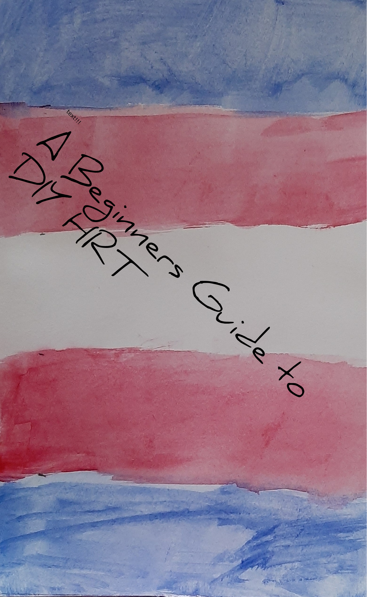
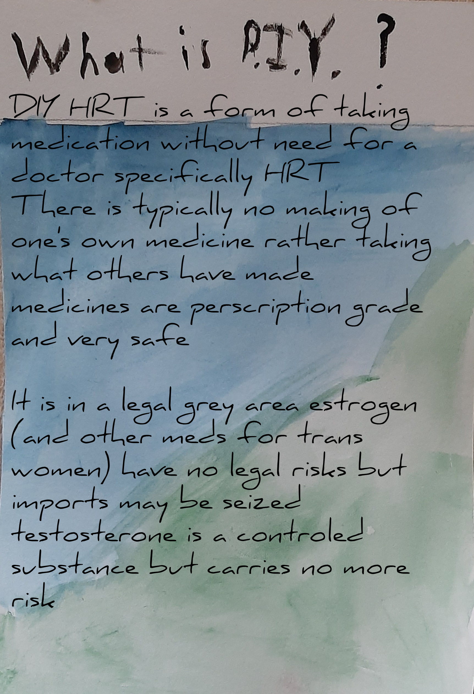
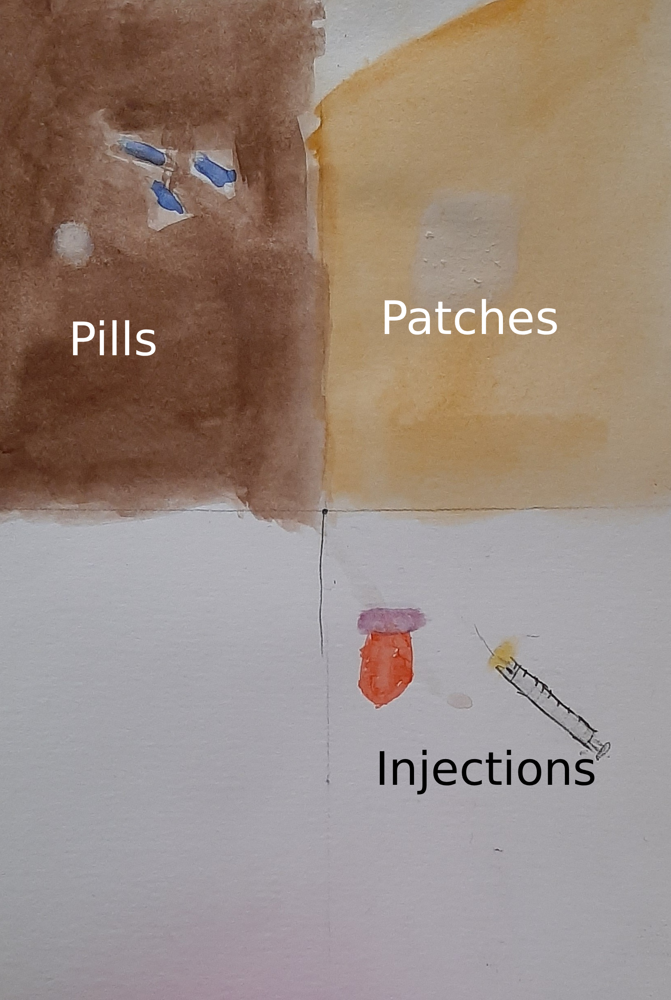
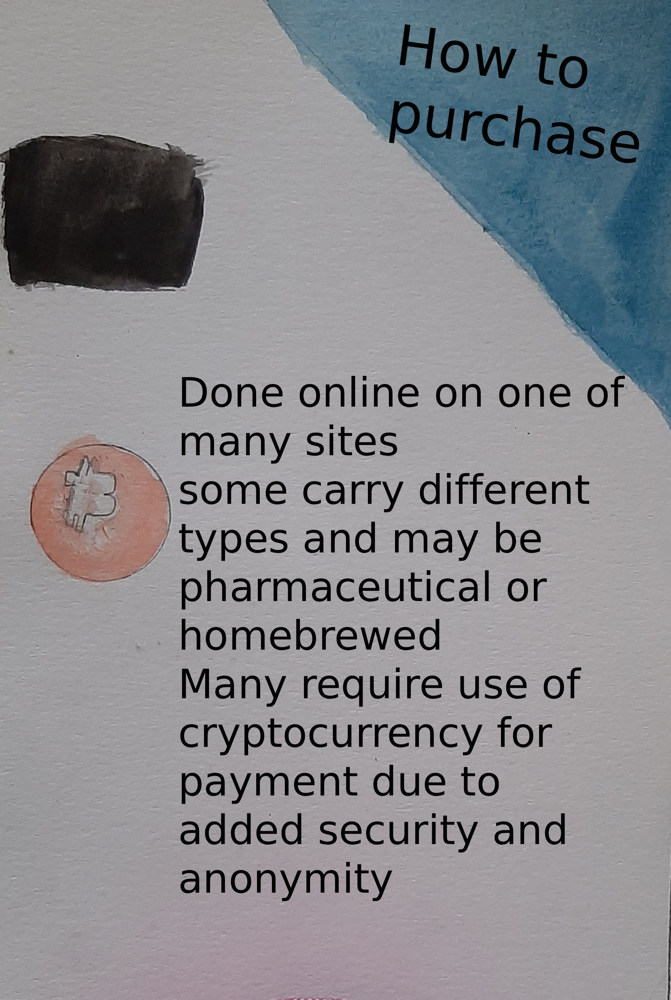
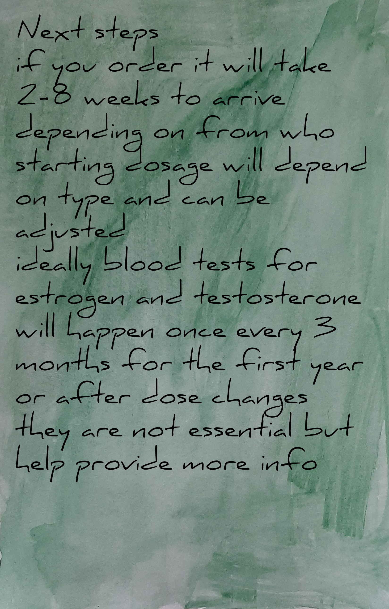
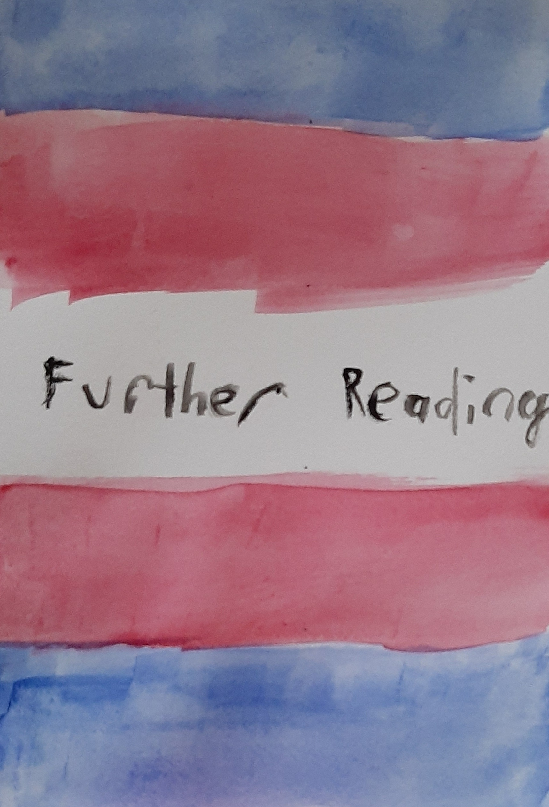

A Beginners Guide to DIY HRT

First we must discuss what DIY HRT even means

Without a doctor is the most important element similar to
over the counter medications HRT has little to no side effects

Personal reasons vary greatly
For me it was a lack of access and want to DIY
Why one wants to is not particularly important beyone being certain that you want HRT

There are four major ways to take HRT
First is pills which is the easiest to acquire but also requires an anti-androgen(AA)
there are three major types of AA, spironolactone, cyproterone acetate, and bicalutamide
spiro is not an AA first, rather a diuretic, but is rather cheap
cypro is taken in fairly low doseage (10mg/2days) and is not too hard to get but can have bad side effects
bica has fewest side effects but is very expensive
Pill estrogen requires the highest dose of 6-8mg per day, if taken sublingually, and more if swallowed
pills also pass through the liver putting strain on it
Patches and gel are both applied to the skin, bypassing the liver
patches have doseing info on them, gel depends greatly on concentration
both of these methods can be done with or without an AA which adds to varying dose
Injections are the best category if you can deal with needles
They carry the lowest risks and are cheapest per week and have zero need for an AA for most everyone
doseage depends on the kind being taken, ranging from 4-5mg/5days with estradiol valerate(EV) to
7-8mg/week with estradiol enantate(EEN) or estradiol cypionate(EC) to 32mg/month with estradiol undecylate(EUn)

Various websites are used by sellers which can be found at databases such as
hrt cafe, diyhrt.market, and diyhrt.info which also has other useful information
many sellers require the used of cryptocurrency for transactions due to everything being legally grey, however crypto is
generally not too hard to use and there are many guides for how to access and use it

Once an order is placed you will wait a few weeks for it to arrive at which leads to the whole point of doing this!
dosage information has already been discussed and will vary somewhat between people.
blood tests, while important to ensuring safety nad effectiveness is not essential
unfortunately diy is not a widely accepted method however you can use your own judgement as to if sharing that you are on HRT with others is swomething you want to do

As with anything there are risks with diy, mostly in terms of allergies, unexpected costs, incorrect dose, and social issues
These risks are not common and the most severe are not recurring

to learn more about HRt broadly (transfem focused)
for more info on DIYHRT broadly
reddit for discussion, useful to see what others are doing and has more information linked